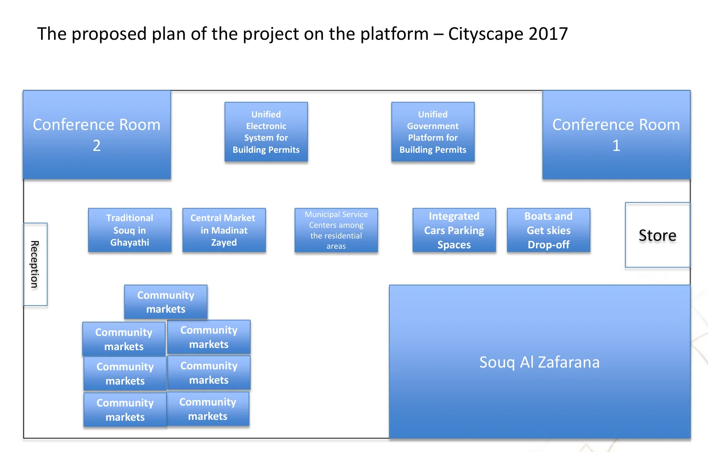
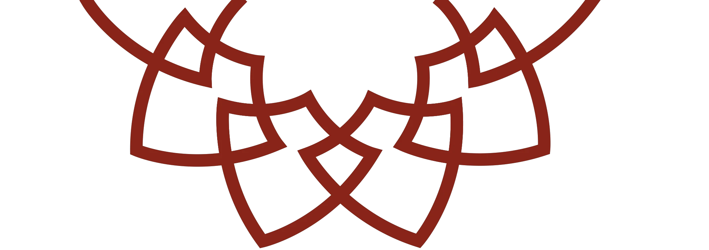
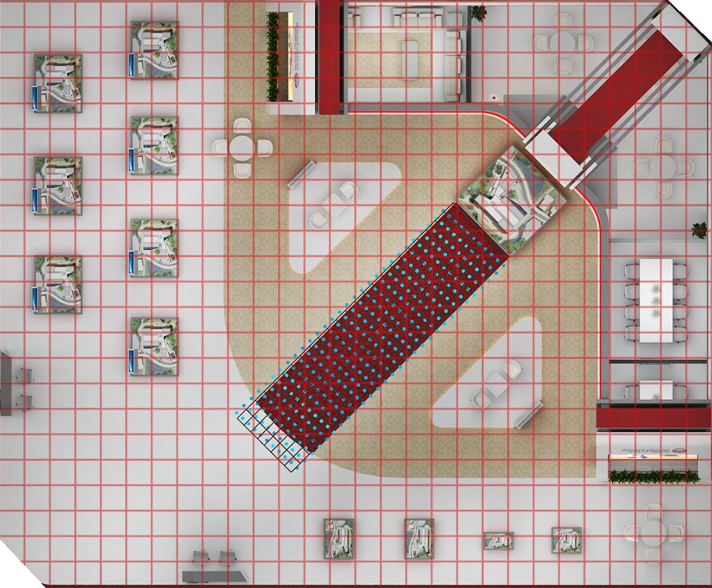
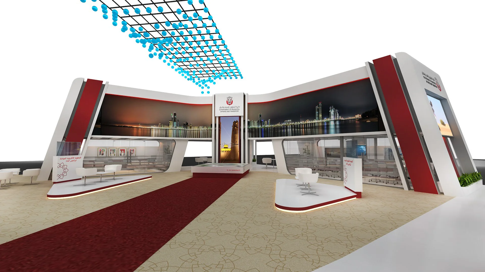
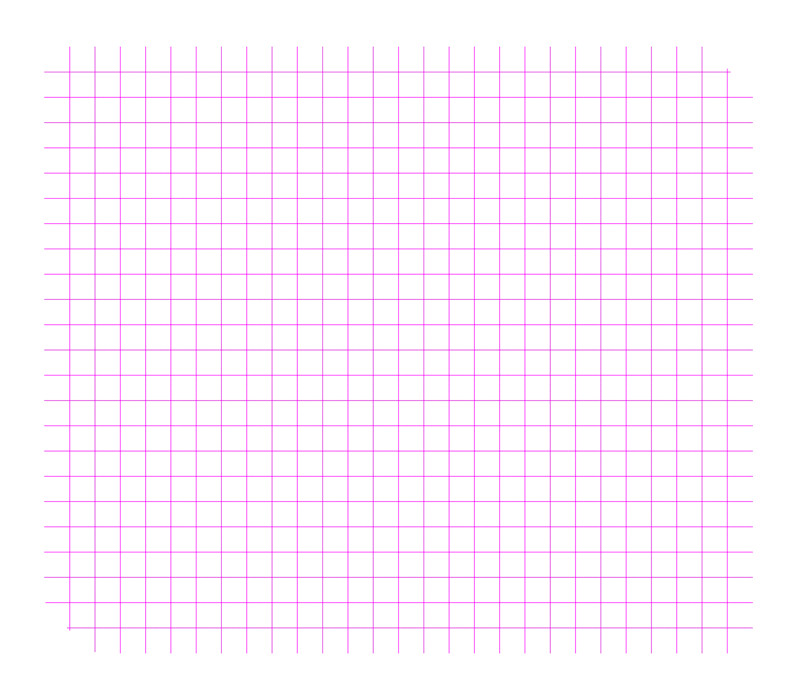
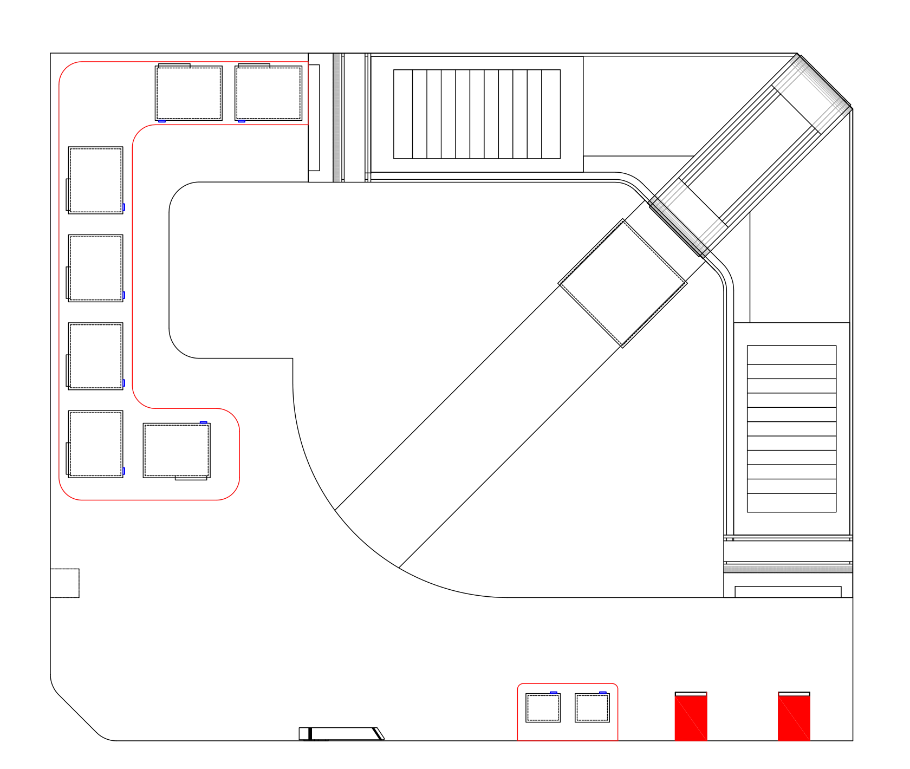
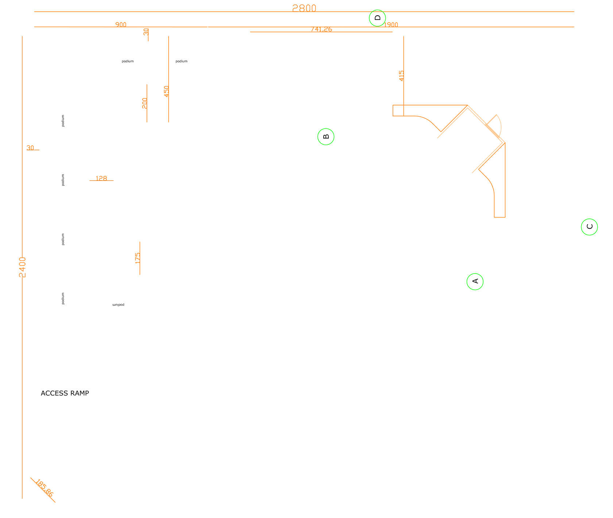
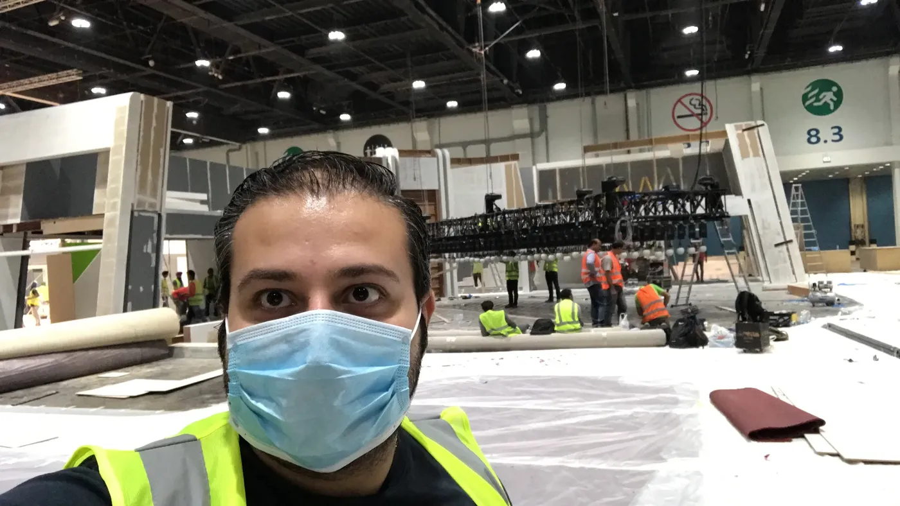
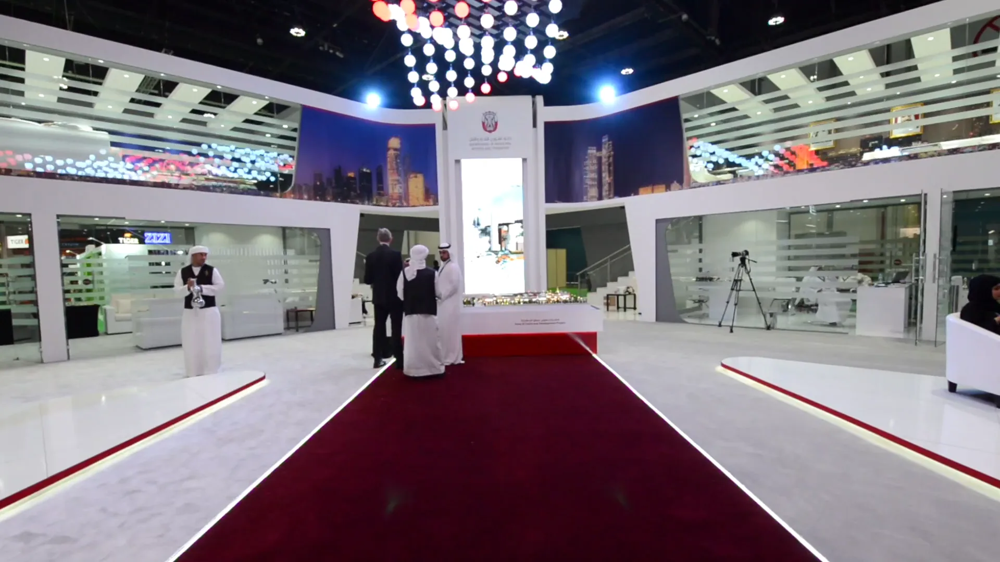
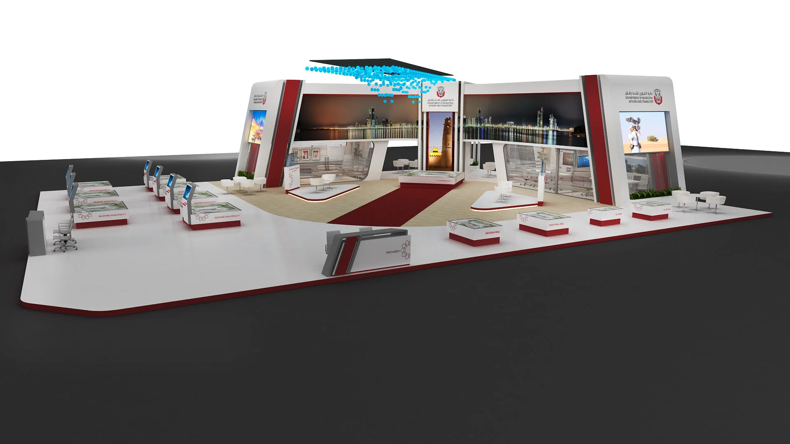

Cityscape Abu Dhabi · ADNEC, Hall 8 · 18–20 April 2017
The brief came as boxes.
Four public bodies, fourteen projects, one floor of 672 square metres.

Cityscape Abu Dhabi · ADNEC, Hall 8 · 18–20 April 2017
Four public bodies, fourteen projects, one floor of 672 square metres.

The system
Every project got its own name plate. One maroon line would lead to all of them.
Names and pattern: original artwork, April 2017
The plan, in depth
A raised floor, 28 metres by 24. Two wings up to six metres high, turned around one diagonal.
3D model: a portfolio presentation, built on the design plan
The design
Spheres hung at different heights, so the ceiling reads as a wave from across the hall.

Fabrication
Hall 8 opened to us at 2 pm on 14 April. The stand was due on the 17th.





Creative Director and Producer · ADNEC, Hall 8 · 18 April 2017
The real carpet, the real tower, the real ceiling. Frames from our show film.
Strike
What stays is the drawing, and one line across the floor.
